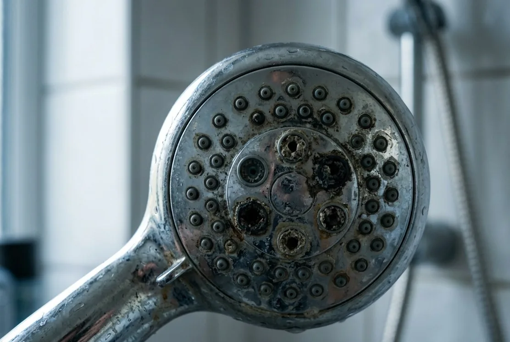

Окисление и фильтрация
Марганец переводят в форму, которую можно задержать фильтром.
Где метод не сработает
Требования к pH и контакту могут быть строже, чем для железа.
Тёмные следы могут быть связаны с марганцем, но внешний вид не определяет концентрацию и форму. Часто марганец рассматривают вместе с железом, pH и окисляемостью.

| Наблюдение | Возможные причины | Проверка |
|---|---|---|
| Чёрные точки на сантехнике | Марганец или частицы из системы | Марганец, железо, мутность, точки отбора |
| Вода темнеет после отстаивания | Окисление растворённых соединений | Марганец, железо, pH, окисляемость |
| Осадок появился после сервиса | Вымыв загрузки или нарушение режима | Диагностика существующей системы |
Удаление марганца чувствительно к pH, окислительно-восстановительным условиям и сопутствующему железу.
Марганец придирчив к условиям окисления, поэтому подходы сравнивают вместе со строкой кислотности.
Марганец переводят в форму, которую можно задержать фильтром.
Требования к pH и контакту могут быть строже, чем для железа.
Подбирается под конкретный состав и режим промывки.
Название загрузки не гарантирует результат вне паспортных условий.
Сочетает ступени, когда загрязнения и расход выходят за пределы одной колонны.
Больше оборудования требует места, дренажа и обслуживания.
Марганец редко приходит один, поэтому место обычно считают сразу под связку ступеней: окисление, фильтрация, а иногда и коррекция pH с отдельной ёмкостью под реагент. Каждый добавленный корпус – это не только площадь под ним, но и запас сверху на перезасыпку загрузки и сбоку на обвязку и подход к клапанам. Если помещение тесное, это не тупик – просто набор возможных схем сужается, и узнать об этом лучше до покупки оборудования.
Промывка фильтра по марганцу уходит тёмной и с осадком: на светлом покрытии или в белом лотке она оставляет заметные следы, и точку сброса выбирают с учётом этого. Если схема реагентная, в стоке присутствуют остатки окислителя – отдельный аргумент против прямого слива в септик с биологической ступенью. Чаще промывку уводят в дренажный колодец или накопитель, а линию делают с уклоном, разрывом струи и доступом для прочистки.
Часто сопутствующая проблема.
ОткрытьСхемы и фильтрующие ступени.
ОткрытьЕсли осадок появился в существующей системе.
ОткрытьВозможно, но такие же следы дают частицы из труб и разрушенная загрузка старого фильтра. Внешний вид задаёт гипотезу, а подтверждает её только анализ на марганец вместе с железом, pH и окисляемостью. Полезно отметить, в каких точках дома осадок есть, а в каких нет – это сужает поиск.
Не обязательно. Марганец требовательнее железа к условиям окисления, и загрузка, отлично работающая по железу, может не удерживать марганец при том же pH. Сначала проверяют настройки, режим промывки и состояние загрузки, а уже потом решают, менять схему или дополнять её.
Иногда можно – перенастройкой, сменой загрузки или коррекцией pH, а иногда действительно нужна отдельная ступень. Разницу определяют концентрации, расход воды и то, что показывает протокол. Просите объяснить, почему существующее оборудование не выводится на нужный режим, прежде чем платить за новое.
Небольшой вынос после перезасыпки или сервиса возможен и обычно уходит за несколько промывок. Если тёмная вода держится дольше, проверяют, правильно ли собран дренажный узел и не вымывается ли загрузка. Это разбирают диагностикой, а не заменой оборудования вслепую.
Сетка или картридж задержат уже окисленные частицы, но растворённый марганец пройдёт сквозь них и выпадет дальше по системе – в бойлере, в трубах, на сантехнике. Поэтому механику ставят как защиту следующих ступеней, а не как решение по марганцу. Что именно нужно, показывает анализ: форма здесь важнее самого факта присутствия.
Приложите анализ и укажите, где именно появляется чёрный осадок. Если системы уже стоит – сообщите модель и дату обслуживания.
Сначала зафиксируем источник и симптомы. Для точного решения понадобятся анализ и параметры дома.